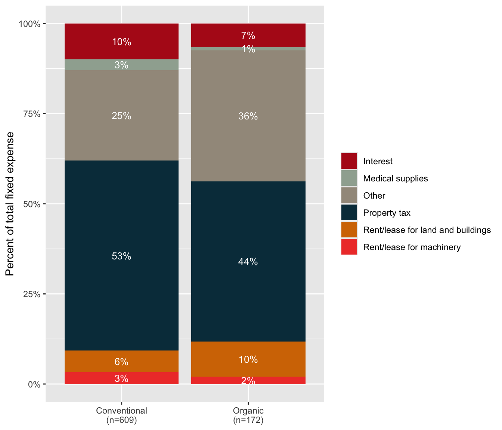
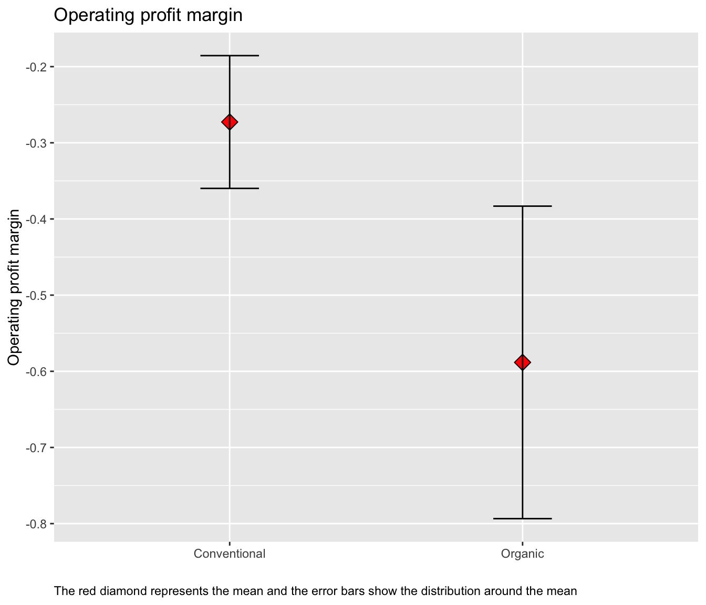

| Variable | Conventional (n=609) | Organic (n=172) |
|---|---|---|
| Total sales | 208,654 | 226,911 |
| Gross cash farm income | 229,724 | 234,173 |
| Total vegetable sales | 207,240 | 226,911 |
| Total acres operated | 82 | 138 |
| Full owner | 68% | 60% |
| Part owner | 21% | 26% |
| Full tenant | 11% | 15% |
| Has Federal crop insurance | 9% | 9% |
| Recieves government payments | 8% | 23% |
| 10th acres of leafy greens harvested | 2.8 | 2.7 |
| 10th acres of cabbage harvested | 0.61 | 2 |
| Beginning | 49% | 54% |
| Primary commodity: Field crop | 0% | 0% |
| Primary commodity: Fruit/veg | 74% | 78% |
| Primary commodity: Other crops | 22% | 19% |
| Primary commodity: Livestock | 1% | 1% |
| Primary commodity: Dairy | 0% | 2% |
| Primary commodity: Poultry | 0% | 0% |
| Primary commodity: Other animal | 2% | 1% |
| Note: | ||
| All dollar amounts are in 2022 dollars. Primary commodity: Other crops includes hay, nursery, greenhouse, christmas trees, woody crops, and other crops. |
Leafy Greens Focus Group, Tables and Figures
1 Data Description
We use data compiled from the 2022 restricted access farm-level data from the Census of Agriculture. All dollars are reported in 2022 dollars.
We include operations with leafy green production in New York. Where leafy green operations are defined as those operations with positive harvested acres of:
- Cabbage, Chinese, Harvested, Tenth-Acres
- Collards Harvested, Tenth-Acres
- Kale Harvested, Tenth-Acres
- Lettuce, Head, Harvested, Tenth-Acres
- Lettuce, Leaf, Harvested, Tenth-Acres
- Lettuce, Romaine, Harvested, Tenth-Acres
- Mustard Greens Harvested, Tenth-Acres
- Spinach Harvested, Tenth-Acres
Data are grouped by operations with certified organic production and those with conventional production.
Tables:
- Average producer summary statistics
- Variable expenses
- Fixed expenses
- Profitability
- Production practices
Figures: - Gross cash farm income - Variable expenses as a percent of total variable expense - Fixed expenses as a percent of total fixed expense
Notes: We do not want to include operations that are greenhouse only. Operations with more than 1/2 acre production are very unlikely to have high tunnels and we assume they are a greenhouse operation, these operations are not included in the analysis.
2 Average producer summary statistics
- Gross cash farm income (GCFI) (includes total sales and government payments)
- Total sales
- Total vegetable sales
- Total acres operated
- 10th acre harvested for leafy greens
- Primary commodity
- Land tenure (full owner, part owner, full tenant)
- Beginning (any operator has 10 years or less experience)
2.1 Average producer summary statistics- Leafy green farmers
2.2 Percent of New York leafy green operations by scale (gross cash farm income)

3 Variable production expenses
Shown as a total and as a percent of total variable expense.
- Breeding stock, other livestock purchased or leased
- Chemical expense
- Customwork expense
- Feed expense
- Fertilizer expense
- Gas, fuel, oil expense
- Hired and contract labor expense
- Repairs and maintenance expense
- Other production expenses (Include storage and warehousing, marketing expenses, insurance, etc. Exclude health insurance premiums and payroll taxes)
- Seeds and plants expense
- Utilities expense
- Total variable expense
3.1 Variable expenses - Leafy Green operations
| Variable | Conventional (n=609) | Organic (n=172) |
|---|---|---|
| Customwork | 507 (509) | 2,758 (1,199) |
| Breeding livestock | 1,124 (228) | 1,027 (538) |
| Feed | 2,756 (583) | 5,170 (1,371) |
| Utilities | 6,013 (785) | 6,757 (1,848) |
| Fuel and oil | 8,354 (1,062) | 7,918 (2,499) |
| Seeds and plants | 10,126 (1,987) | 14,154 (4,678) |
| Maintenance and repair | 19,925 (4,652) | 13,952 (10,950) |
| Fertilizer and chemicals | 20,052 (4,912) | 22,430 (11,563) |
| Hired and contract labor | 80,484 (13,975) | 118,208 (32,894) |
| Total variable expenses | 149,341 (22,895) | 192,375 (53,892) |
| Customwork as a percent of total variable expense | 1% (0%) | 1% (1%) |
| Breeding livestock as a percent of total variable expense | 3% (0%) | 1% (1%) |
| Feed as a percent of total variable expense | 8% (1%) | 6% (2%) |
| Utilities as a percent of total variable expense | 9% (0%) | 7% (1%) |
| Fuel and oil as a percent of total variable expense | 13% (1%) | 9% (1%) |
| Fertilizers and chemicals as a percent of total variable expense | 13% (1%) | 12% (2%) |
| Seeds and plants as a percent of total variable expense | 13% (1%) | 12% (2%) |
| Maintenance and repair as a percent of total variable expense | 19% (1%) | 15% (2%) |
| Hired and contract labor as a percent of total variable expense | 21% (1%) | 37% (3%) |
| Note: | ||
| Mean (SE). Expenses are in 2022 dollars |
3.2 Variable expenses as a percent of total variable expense - Leafy Green operations

4 Fixed production expenses
Shown as a total and as a percent of total fixed expense.
- Interest paid on debts secured by real estate
- Interest paid on debts not secured by real estate
- Property taxes
- Medical supplies, veterinary, custom services for livestock
Also include (but not as part of the total fixed expenses) - Depreciation expense claimed by the operation for all capital assets
4.1 Fixed expenses - Leafy Green operations
| Variable | Conventional (n=609) | Organic (n=172) |
|---|---|---|
| Medical supplies | 656 (140) | 402 (330) |
| Rent/lease for machinery | 2,777 (945) | 1,278 (2,226) |
| Interest | 3,615 (583) | 3,959 (1,373) |
| Rent/lease for land and buildings | 3,857 (893) | 6,211 (2,102) |
| Property tax | 6,599 (566) | 6,931 (1,332) |
| Other production expenses | 16,503 (5,576) | 39,324 (13,125) |
| Total fixed expense | 34,007 (6,861) | 58,105 (16,150) |
| Medical supplies | 3% (0%) | 1% (1%) |
| Rent/lease for machinery | 3% (1%) | 2% (1%) |
| Rent/lease for land and buildings | 6% (1%) | 10% (2%) |
| Interest | 10% (1%) | 7% (2%) |
| Other | 25% (1%) | 36% (3%) |
| Property tax | 53% (2%) | 44% (4%) |
| Note: | ||
| Mean (SE). Expenses are in 2022 dollars. Other expenses include storage and warehousing, marketing expenses, insurance, vehicle registration fees, etc. Excludes health insurance premiums and payroll taxes |
4.2 Fixed expenses as a percent of total fixed expense - Leafy Green operations

5 Profitability
- Net farm income
- Operating profit margin
- Return on assets
5.1 Average profitability - Leafy Green operations
| Variable | Conventional (n=609) | Organic (n=172) |
|---|---|---|
| Return on assets | 0.067 (0.016) | 0.014 (0.038) |
| Operating profit margin | -0.27 (0.087) | -0.59 (0.21) |
| Net farm income | 45,390 (16,657) | -16,307 (39,208) |
| Note: | ||
| Mean (SE). Net farm income is in 2022 dollars |
5.2 Return on Assets - Leafy Green operations

5.3 Net Farm Income - Leafy Green operations

5.4 Operating Profit Margin - Leafy Green operations

6 Land use practices
- Cropland acres planted to a cover crop
- No till acres
- Reduced till acres
6.1 Land Use Practices - Leafy Green operations
| Variable | Conventional (n=609) | Organic (n=172) |
|---|---|---|
| Cover crop | 38% (2%) | 67% (5%) |
| Reduced till | 23% (2%) | 54% (5%) |
| No till | 31% (2%) | 30% (5%) |
| Note: | ||
| Mean (SE). Net farm income is in 2022 dollars |